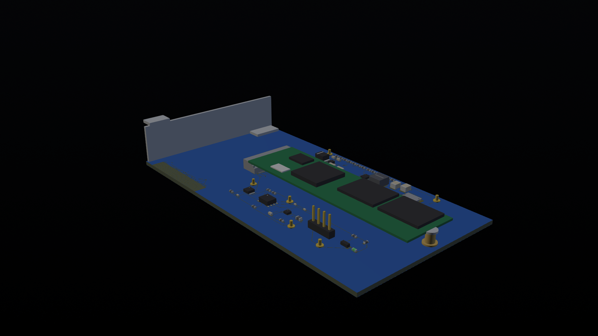

Signal continuity
Eight data pairs, REFCLK and sidebands are defined as a direct host-to-SSD path. No retimer, switch or packet conversion.
NVIDIA LDE INTERVIEW PORTFOLIO · REV K
A traceable OrCAD X / Allegro workflow for a six-layer PCIe Gen3 x4 add-in card to M.2 M-Key 2280 NVMe adapter.

01 / SYSTEM FUNCTION
The host Root Complex and the NVMe controller remain the protocol endpoints. This board owns connection, power, telemetry and reviewable handoff.
Eight data pairs, REFCLK and sidebands are defined as a direct host-to-SSD path. No retimer, switch or packet conversion.
12 V slot input passes an eFuse, 6 A buck and 5 mΩ Kelvin shunt before the 3.3 V SSD branch.
INA238 current and TMP1075 temperature paths reach a target-only I²C header with no external power back-feed.
Digital closure is complete for the current board; compliance, chassis fit and bench qualification remain open.
02 / VISUAL EVIDENCE
Portfolio views stay clean; engineering views, native reports and hashes remain in the repository.
03 / ENGINEERING METHOD
The point is not to make uncertainty disappear; it is to make it findable.
12 V + eFuse + buck was selected for review depth. The official buck profile records a 3.109 V recovery failure; no supported-SSD claim is inferred.
Read decision record ↗Nine native differential-pair objects exist. Width, gap, via and skew remain pending the actual fabricator stack-up and controlled spec.
Read constraint status ↗Native 3DX views and AP242/mm STEP re-import are hash-bound to RevK. Missing exact models keep collision cases preliminary or blocked.
Read 3D status ↗Python validators test CSV/report contracts and negative fixtures; they do not replace native Cadence review or bench data.
Read test harness ↗CURRENT REVK SNAPSHOT
ENGINEERING BOUNDARY
SOURCE-TRACEABLE / REVIEW-READY
Start with the function. Open the evidence when the conversation turns technical.
{kind=link}